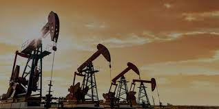
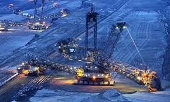

Extraction
L'extraction minière moderne, cruciale pour répondre à la demande croissante en métaux, présente des défis majeurs. Elle engendre la déforestation, la perte de biodiversité, et la pollution de l'eau et du sol. Sur le plan social, elle entraîne des déplacements forcés, des conflits et des risques sanitaires. Des solutions durables, telles que des pratiques minières responsables et une transition vers une économie circulaire, sont impératives pour minimiser ces impacts négatifs et préserver l'environnement ainsi que les communautés locales.
 